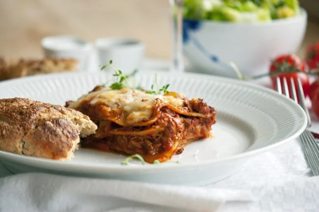

Lasagne
Lasagne

Lækker lasagne, hurtig at lave. tager tid at simre. Laves evt med gæster, så man forbereder inden også kan den simrer imens vi snakker og hygger med en kold vin.
Ingredienser
- 2 løg, finthakket
- 4 fed hvidløg, finthakket
- 500 g hakket oksekød
- 2 tsk oregano, tørret
- 1 tsk timian, tørret
- 4 gulerod, groftrevet
- 5 stængler bladselleri, groftrevet
- 1 squash, groftrevet
- 1 dl koncentreret tomatpuré
- 2 dåser hakket tomater
- 1 dl rødvin
- 2 spsk olivenolie
- salt
- sort peber, frisk kværnet
- 200 g lasagneplader
- 125 g frisk mozzarella
- Mornaysauce
Fremgangsmåde
- Sauter løg og hvidlød i olivenolie, til de er gennemsigtige
- Tilsæt kødet og brun det ved høj varme. Skru ned for varmen og tilsæt resten af ingredienserne
- Lad saucen simrekoge under låg i 2-6 timer - jo længere, des bedre.
- Når saucen er færdig opbygges lasagnen således
- Kom et lag mornaysauce i et smurt ovnfast fad.
- Kom derefter skiftevis lasagnesauce og plader i fadet og slut af med saucen
- Top til sidst med et lag mornaysauce og mozzarella, skæret i tynde skiver. Kom fadet i en forvarmet ovn ved 175 grader varmluft
- Bag lasagnen i ca 20-25 minutter. indtil lasagnepladerne er møre med lidt bid. Lad den evt stå 10 efter udtagning fra oven